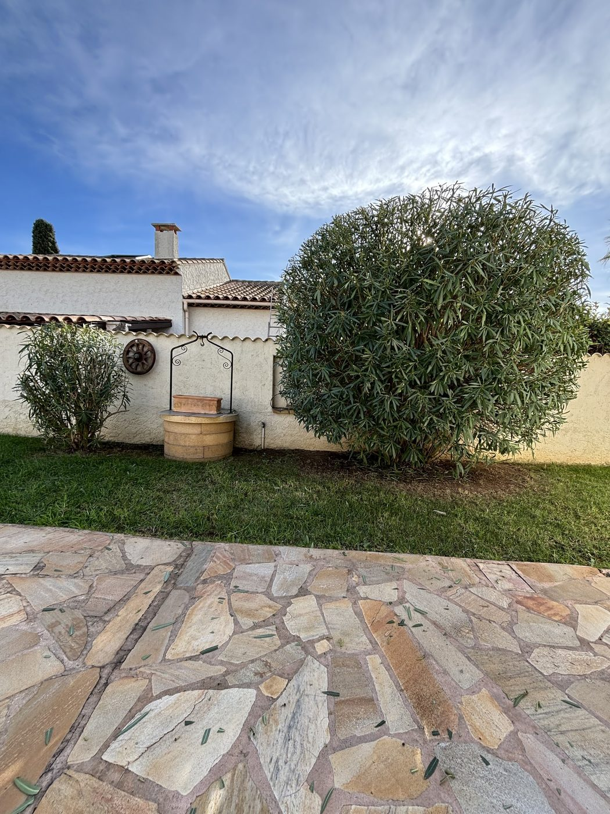
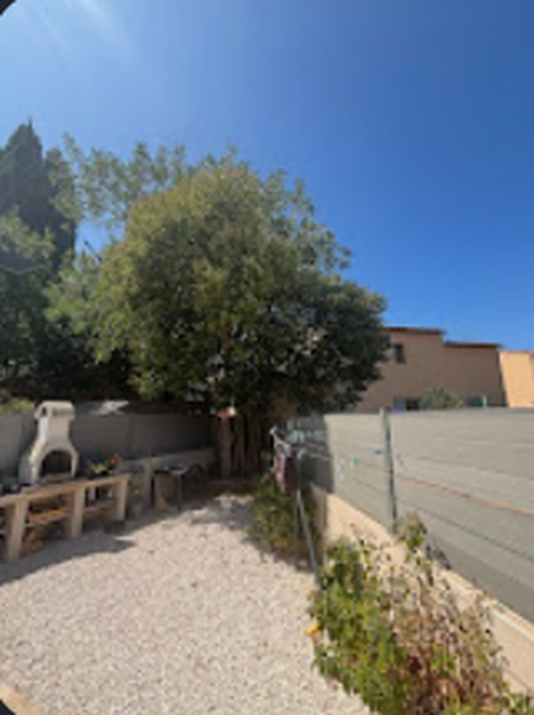
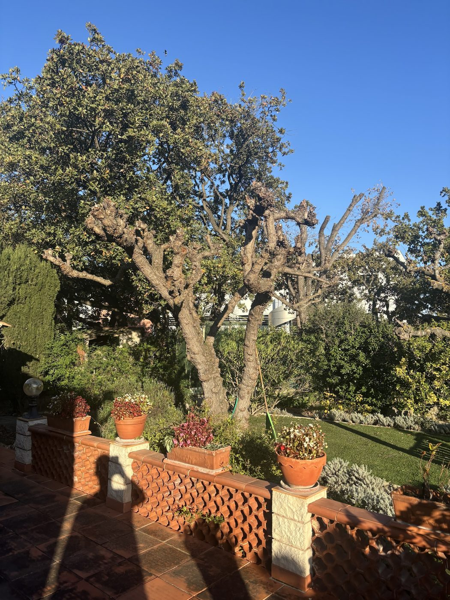
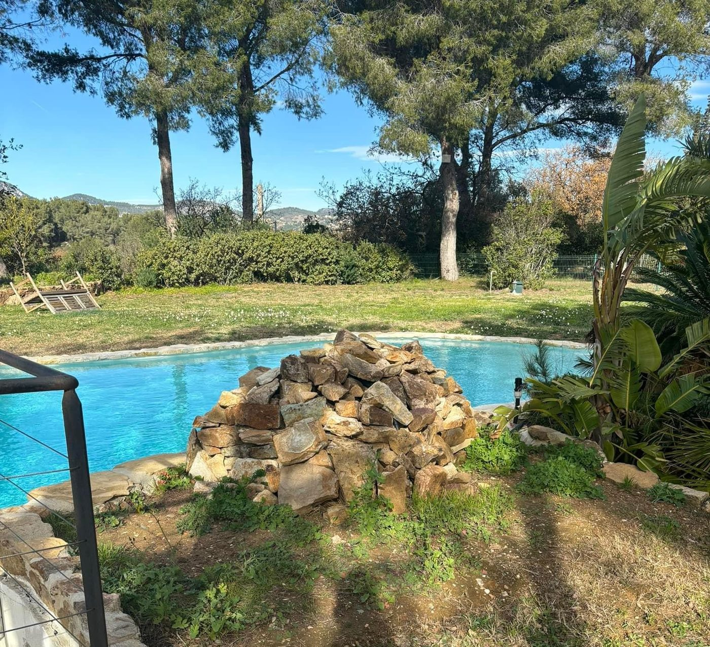

Taille de haies & arbustes
Haies de laurier, photinia, pittosporum, cyprès… Taille droite ou arrondie, aux bonnes périodes pour garder une végétation dense et saine.
- Haies hautes
- Arbustes
- Taille de formation
- Ramassage inclus
Taille de haies, entretien, débroussaillage et aménagements extérieurs. Un travail net, soigné, et un jardin qui reste beau toute l'année.

MD Services s'occupe des jardins de particuliers à Six-Fours-les-Plages et alentour. Une haie bien taillée, une pelouse régulière, des massifs dégagés : ce sont les détails qui font qu'on a envie de passer du temps dehors.
Ici le soleil tape, le mistral souffle et la végétation pousse vite. On adapte chaque intervention au climat méditerranéen : bonnes périodes de taille, arrosage raisonné, plantes qui supportent la sécheresse.
Une intervention ponctuelle ou un entretien régulier. On vient, on fait le travail, on repart en laissant les lieux propres.
Haies de laurier, photinia, pittosporum, cyprès… Taille droite ou arrondie, aux bonnes périodes pour garder une végétation dense et saine.
Tonte, désherbage, nettoyage des massifs, ramassage des feuilles. En passage unique ou en contrat régulier pour ne plus y penser.
Dans le Var, le débroussaillement autour des habitations est souvent une obligation légale contre les incendies. On dégage terrains et abords pour vous mettre en règle.
Création ou rénovation d'espaces verts : plantations méditerranéennes, massifs, gravier décoratif, bordures. Un extérieur pensé pour être beau et facile à vivre.
Tournez le cadran pour voir ce qu'il faut faire dans un jardin varois à chaque période de l'année.
Glissez le point · ou flèches du clavier
Quelques chantiers récents. Passez la souris sur les photos.



Une note parfaite sur Google, construite chantier après chantier. Lisez les avis directement sur la fiche de l'entreprise.
Lire les avis sur Google →Par téléphone ou via le formulaire, en décrivant votre jardin et vos besoins.
Visite sur place pour évaluer le travail et répondre à vos questions.
Un prix clair, sans surprise, avant toute intervention.
Le travail est fait, les déchets verts évacués, le jardin rendu net.